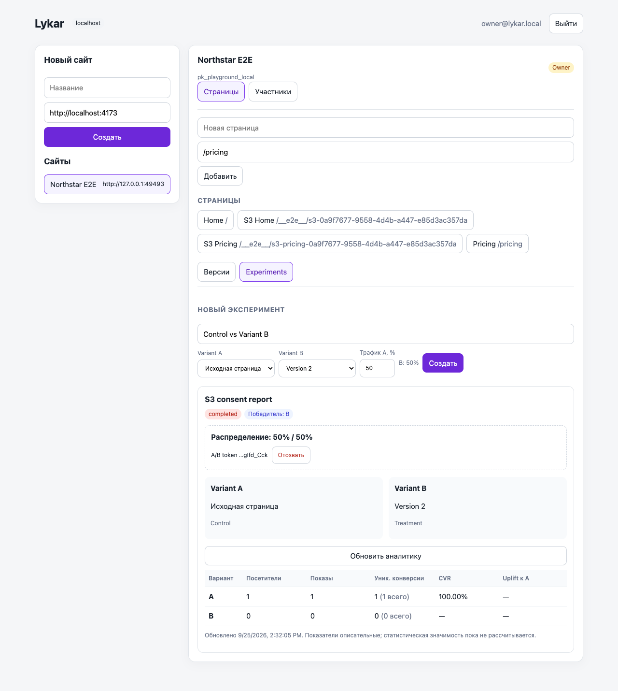
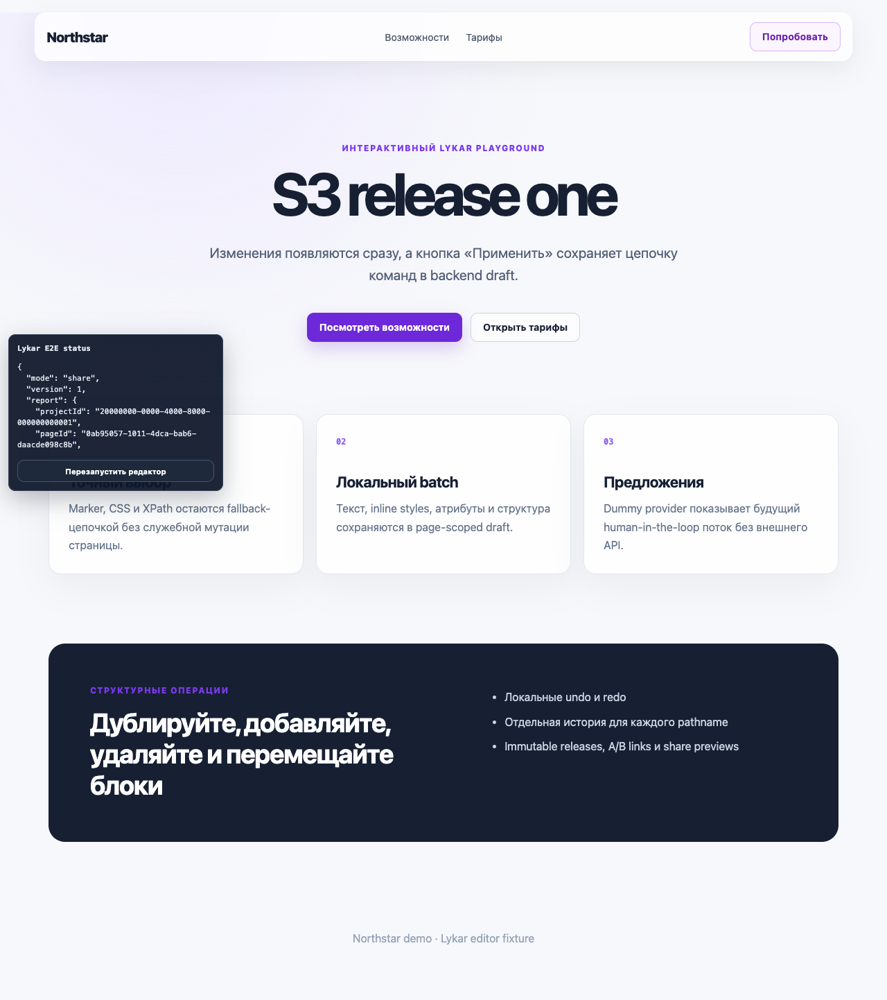
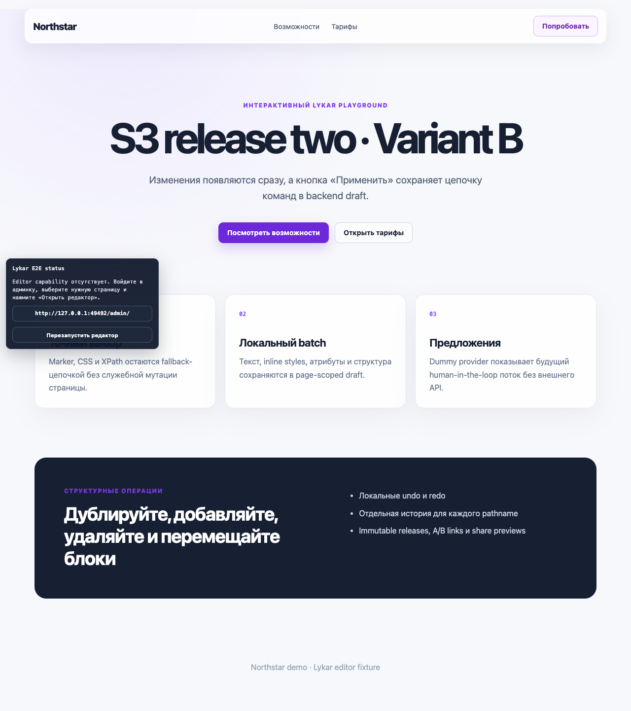

S3 — приёмка Admin → release → share → experiment → report
Закрыт 23 сентября 2026 · исправления по ревью 25 сентября · шесть task records · browser + PostgreSQL acceptance
PASS · 34/34 browser checks
Владелец вошёл в Admin, открыл Members и Pages, изменил Draft в editor, выпустил immutable Release, поделился ссылкой, проверил ограничение capability и отзыв. Затем создал и завершил A/B эксперимент и сверил consent-gated отчёт с ручными событиями.
Что изменилось
- Admin показывает loading/retry/error состояния; устаревшие page/project ответы не перезаписывают новый выбор. Конфликт publish показывает обновлённую ревизию и разрешает явный retry.
- После создания share Admin оставляет URL доступным в текстовом поле, даже если браузер запретил clipboard.
- Создание сайта, Page, эксперимента и операции с участниками отличают успешное изменение от сбоя обновления списка. Поздний ответ для другого сайта не меняет текущий выбор.
- Вариантный PATCH сохраняет пропущенные releaseId и description; явный
nullочищает nullable поле. - Новые A/B capability находятся во фрагменте visitor URL; runtime передаёт variant capability в заголовке Authorization. Analytics прекращает принимать новые события после отзыва ссылки или завершения эксперимента.
- Playground больше не предоставляет согласие на аналитику по умолчанию; пользователь или host вызывает
Lykar.consent('granted'). - Добавлен browser acceptance на независимых временных Page paths. HTML fallback ограничен маршрутом
/__e2e__/s3-*и отдаёт Home/Pricing shell по назначению, не меняя общие fixtures.
Проверенные контракты
| Путь | Результат | Evidence |
|---|---|---|
| Admin и доступ | Участники и Owner видны в Admin; PostgreSQL проверки покрывают invitations, роли, отзыв, передачу владения и инвариант единственного Owner. | Browser S3 + API PostgreSQL suite |
| Draft и Release | Редактор сохраняет изменение; устаревшая ревизия возвращает 409, Admin обновляет состояние, повторная публикация проходит. У каждого Page своя последовательность версий. | s3-acceptance.spec.ts |
| Share capability | Обмен кода на чужом Page отклонён (401), на нужном Page разрешён. Посетитель видит Release без панели редактора; отзыв делает share URL недействительным (404). | s3-acceptance.spec.ts |
| A/B lifecycle | A использует исходную страницу, B — immutable Release. Входная A/B-ссылка назначает eligible вариант; назначение sticky при reload. После выбора победителя обычный URL по-прежнему показывает native страницу. Отозванная ссылка и завершённый эксперимент прекращают приём новых событий. | s3-acceptance.spec.ts + PostgreSQL integration |
| Consent и отчёт | Pending даёт CONSENT_REQUIRED, denied даёт CONSENT_DENIED, события не попадают в отчёт. После granted и явной конверсии ручные totals совпадают: 1 visitor, 1 view, 1 unique conversion, 1 conversion; CVR 100%. | Browser report + API totals |
Визуальные артефакты



Проверки
npx playwright test tests/e2e/s3-acceptance.spec.ts tests/e2e/s3-admin-recovery.spec.ts --project=chromium— 2 passed.npm run test:e2e:browser— 34 passed: Chromium, Firefox и WebKit style acceptance.npm run test:e2e:http— PostgreSQL integration suite и HTTP smoke прошли; итог smoke: version 1 / release created.npm test— прошёл; DB-dependent integration checks также выполнены предыдущей командой с временной PostgreSQL.npm run build,npm run typecheckиgit diff --check— прошли.
Границы и следующий этап
Победитель эксперимента — метаданные, автоматического deployment нет; статистическая значимость не заявляется. Реальный email provider и автоматический retention scheduler остаются в S6, явный Deploy/Disable/Rollback — в S5. Следующий спринт — cooperative SPA/React adapter и route lifecycle.